IDE磁盘镜像
在这一部分，我们主要依赖fsformat.c文件创建磁盘镜像文件 gxemul/fs.img，这个磁盘镜像可以模拟与真实的磁盘文件设备之间的交互。
fs/fsformat.c
函数之间的调用关系如下所示——

reverse
将指针p所指向的32位无符号数进行大小端转换。
void reverse(uint32_t *p) {
uint8_t *x = (uint8_t *) p;
uint32_t y = *(uint32_t *) x;
x[3] = y & 0xFF;
x[2] = (y >> 8) & 0xFF;
x[1] = (y >> 16) & 0xFF;
x[0] = (y >> 24) & 0xFF;
}reverse_block
将指针b所指向磁盘块的所有内容，按字依次进行大小端转换（需要循环调用reverse函数）
void reverse_block(struct Block *b) {
int i, j;
struct Super *s;
struct File *f, *ff;
uint32_t *u;
switch (b->type) {
case BLOCK_FREE:
case BLOCK_BOOT:
break; // do nothing.
case BLOCK_SUPER:
s = (struct Super *)b->data;
reverse(&s->s_magic);
reverse(&s->s_nblocks);
ff = &s->s_root;
reverse(&ff->f_size);
reverse(&ff->f_type);
for(i = 0; i < NDIRECT; ++i) {
reverse(&ff->f_direct[i]);
}
reverse(&ff->f_indirect);
break;
case BLOCK_FILE:
f = (struct File *)b->data;
for(i = 0; i < FILE2BLK; ++i) {
ff = f + i;
if(ff->f_name[0] == 0) {
break;
}
else {
reverse(&ff->f_size);
reverse(&ff->f_type);
for(j = 0; j < NDIRECT; ++j) {
reverse(&ff->f_direct[j]);
}
reverse(&ff->f_indirect);
}
}
break;
case BLOCK_INDEX:
case BLOCK_BMAP:
u = (uint32_t *)b->data;
for(i = 0; i < BY2BLK/4; ++i) {
reverse(u+i);
}
break;
}
}init_disk
对磁盘进行初始化，把disk[0]作为引导扇区和分区表所在的磁盘块，把disk[1]作为超级块。此外，还要根据磁盘块总个数（NBLOCK）为位图分配空间（分配nbitblock个磁盘块）。
void init_disk() {
int i, r, diff;
// Step 1: Mark boot sector block.
disk[0].type = BLOCK_BOOT;
// Step 2: Initialize boundary.
nbitblock = (NBLOCK + BIT2BLK - 1) / BIT2BLK;
nextbno = 2 + nbitblock;
// Step 2: Initialize bitmap blocks.
for(i = 0; i < nbitblock; ++i) {
disk[2+i].type = BLOCK_BMAP;
}
for(i = 0; i < nbitblock; ++i) {
memset(disk[2+i].data, 0xff, BY2BLK);
}
if(NBLOCK != nbitblock * BIT2BLK) {
diff = NBLOCK % BIT2BLK / 8;
memset(disk[2+(nbitblock-1)].data+diff, 0x00, BY2BLK - diff);
}
// Step 3: Initialize super block.
disk[1].type = BLOCK_SUPER;
super.s_magic = FS_MAGIC;
super.s_nblocks = NBLOCK;
super.s_root.f_type = FTYPE_DIR;
strcpy(super.s_root.f_name, "/");
}next_block
在磁盘中顺次获取一个新的磁盘块，并将该磁盘块的类型标记为type
int next_block(int type) {
disk[nextbno].type = type;
return nextbno++;
}flush_bitmap
将所有已经使用的磁盘块在位图中标记为0，表示磁盘块正在被占用。
void flush_bitmap() {
int i;
// update bitmap, mark all bit where corresponding block is used.
for(i = 0; i < nextbno; ++i) {
((uint32_t *)disk[2+i/BIT2BLK].data)[(i%BIT2BLK)/32] &= ~(1<<(i%32));
}
}finish_fs
将磁盘块中的所有内容拷贝到名为name的文件中,
在拷贝前需要对每个磁盘块的内容进行大小端转换（调用reverse_block函数）
void finish_fs(char *name) {
int fd, i, k, n, r;
uint32_t *p;
// Prepare super block.
memcpy(disk[1].data, &super, sizeof(super));
// Dump data in `disk` to target image file.
fd = open(name, O_RDWR|O_CREAT, 0666);
for(i = 0; i < 1024; ++i) {
reverse_block(disk+i);
write(fd, disk[i].data, BY2BLK);
}
// Finish.
close(fd);
}save_block_link
将文件f第nblk个内容块所在的磁盘块设置为disk[bno]，也就是将f的第nblk个文件指针设置为bno。
void save_block_link(struct File *f, int nblk, int bno)
{
assert(nblk < NINDIRECT); // if not, file is too large !
if(nblk < NDIRECT) {
f->f_direct[nblk] = bno;
}
else {
if(f->f_indirect == 0) {
// create new indirect block.
f->f_indirect = next_block(BLOCK_INDEX);
}
((uint32_t *)(disk[f->f_indirect].data))[nblk] = bno;
}
}make_link_block
获取一个新的磁盘块（调用next_block函数），块号为bno，并将f的第nblk个文件指针设置为bno（调用save_block_link函数）。
int make_link_block(struct File *dirf, int nblk) {
int bno = next_block(BLOCK_FILE);
save_block_link(dirf, nblk, bno);
dirf->f_size += BY2BLK;
return bno;
}create_file
在目录dirf中找到一个空闲的文件控制块（空闲的标志为f->f_name[0] ==
'\0'）,用于控制和记录一个新的文件，最后将这个文件控制块返回。
struct File *create_file(struct File *dirf) {
struct File *dirblk;
int i, j, bno;
int nblk = dirf->f_size / BY2BLK;
// Step1: According to different range of nblk, make classified discussion to
// calculate the correct block number.
if (nblk == 0) {
bno = make_link_block(dirf, nblk);
return (struct File *)(disk[bno].data);
}
if (nblk <= NDIRECT) {
bno = dirf->f_direct[nblk - 1];
}
else {
bno = ((u_int *)(disk[dirf->f_indirect].data))[nblk - 1];
}
dirblk = (struct File *)(disk[bno].data);
// Step2: Find an unused pointer
for (i = 0; i < FILE2BLK; i++) {
if (dirblk[i].f_name[0] == '\0') {
return dirblk + i;
}
}
//if not found
bno = make_link_block(dirf, nblk);
return (struct File *)(disk[bno].data);
}write_file
在dirf中创建一个新的文件（调用create_file），本质上是获得一个新的文件控制块，并进行初始化（f_name,
f_size,
f_type）。然后将path所定位的文件的内容复制在磁盘中，同时在文件控制块中记录相关磁盘块的索引。
void write_file(struct File *dirf, const char *path) {
int iblk = 0, r = 0, n = sizeof(disk[0].data);
uint8_t buffer[n+1], *dist;
struct File *target = create_file(dirf);
/* in case `create_file` is't filled */
if (target == NULL) return;
int fd = open(path, O_RDONLY);
// Get file name with no path prefix.
const char *fname = strrchr(path, '/');
if(fname)
fname++;
else
fname = path;
strcpy(target->f_name, fname);
target->f_size = lseek(fd, 0, SEEK_END);
target->f_type = FTYPE_REG;
// Start reading file.
lseek(fd, 0, SEEK_SET);
while((r = read(fd, disk[nextbno].data, n)) > 0) {
save_block_link(target, iblk++, next_block(BLOCK_DATA));
}
close(fd); // Close file descriptor.
}文件系统服务
文件系统服务进程主要是用来为其他用户进程提供相关服务，fs目录下fs.c、ide.c、serve.c三个文件都是用于文件系统服务进程。
由于fs.c和ide.c的文件结构都比较简单，函数理解的难度不大，因此我们在这里只分析fs.c中的函数。

fs/fs.c
fs.c中的函数多达33个，函数之间的调用关系也十分复杂，完整的画出函数调用链几乎不可能。为了便于理解，我将这33个函数按其调用层次划分为三类——block类、block-file类、file类，只有同一类和相邻类中的函数才可以相互调用。
diskaddr
计算指定磁盘块（下标为blockno）对应的块缓存虚拟地址。
u_int diskaddr(u_int blockno)
{
if (blockno >= DISKMAX / BY2BLK) {
user_panic("In diskaddr: non-existent block %08x\n", blockno);
}
return DISKMAP + blockno * BY2BLK;
}va_is_mapped
检查va所表示的虚拟地址是否被进程页表映射，需要同时检查页目录和二级页表。
u_int va_is_mapped(u_int va)
{
return (((*vpd)[PDX(va)] & (PTE_V)) && ((*vpt)[VPN(va)] & (PTE_V)));
}block_is_mapped
检查指定磁盘块（下标为blockno）对应的块缓存虚拟地址是否被进程页表映射（需要调用diskaddr()和va_is_mapped()）。如果被进程页表映射了，说明改磁盘块的数据已经被加载到了内存中。
u_int block_is_mapped(u_int blockno)
{
u_int va = diskaddr(blockno);
if (va_is_mapped(va)) {
return va;
}
return 0;
}va_is_dirty
检查虚拟地址va所对应的物理内存的数据是否被修改（检查页表项的dirty位即可）。
u_int
va_is_dirty(u_int va)
{
return (* vpt)[VPN(va)] & PTE_D;
}block_is_dirty
首先找到指定磁盘块（下标为blockno）在内存中对应的块缓存地址，然后检查该虚拟地址对应的物理内存的数据是否被修改。
u_int block_is_dirty(u_int blockno)
{
u_int va = diskaddr(blockno);
return va_is_mapped(va) && va_is_dirty(va);
}map_block
将指定磁盘块（下标为blockno）映射到内存中（作为块缓存），同时需要为块缓存分配物理内存。
int map_block(u_int blockno)
{
u_int va;
int ret;
// Step 1: Decide whether this block has already mapped to a page of physical memory.
if (block_is_mapped(blockno)) return 0;
// Step 2: Alloc a page of memory for this block via syscall.
va = diskaddr(blockno);
ret = syscall_mem_alloc(0, va, PTE_V | PTE_R);
return ret;
}unmap_block
取消指定磁盘块（下标为blockno）在内存中的映射，也就是将块缓存对应的页表项清空。
void
unmap_block(u_int blockno)
{
u_int va;
int ret;
// Step 1: check if this block is mapped.
if (!block_is_mapped(blockno)) return;
// Step 2: use block_is_free，block_is_dirty to check block,
// if this block is used(not free) and dirty, it needs to be synced to disk: write_block
// can't be unmap directly.
if (block_is_free(blockno)) return;
if (block_is_dirty(blockno)) {
write_block(blockno);
}
// Step 3: use 'syscall_mem_unmap' to unmap corresponding virtual memory.
va = diskaddr(blockno);
ret = syscall_mem_unmap(0, va);
if (ret < 0) {
writef("In unmap_block: unmap error!");
}
// Step 4: validate result of this unmap operation.
user_assert(!block_is_mapped(blockno));
}read_block
确保指定的磁盘块（下标位blockno）映射到内存中（块缓存），并将*blk赋值为对应的块缓存的首地址。如果指定磁盘块没有实现缓存映射，则首先应该调用map_block完成映射，然后将磁盘块中的数据复制到块缓存中。
int read_block(u_int blockno, void **blk, u_int *isnew)
{
u_int va;
// Step 1: validate blockno. Make file the block to read is within the disk.
if (super && blockno >= super->s_nblocks) {
user_panic("reading non-existent block %08x\n", blockno);
}
// Step 2: validate this block is used, not free.
if (bitmap && block_is_free(blockno)) {
user_panic("reading free block %08x\n", blockno);
}
// Step 3: transform block number to corresponding virtual address.
va = diskaddr(blockno);
// Step 4: read disk and set *isnew.
if (block_is_mapped(blockno)) { // the block is in memory
if (isnew) {
*isnew = 0;
}
} else { // the block is not in memory
if (isnew) {
*isnew = 1;
}
syscall_mem_alloc(0, va, PTE_V | PTE_R);
ide_read(0, blockno * SECT2BLK, (void *)va, SECT2BLK);
}
// Step 5: if blk != NULL, set `va` to *blk.
if (blk) {
*blk = (void *)va;
}
return 0;
}
write_block
将块缓存（下标为blockno）中的数据写回到对应的磁盘块中。
void
write_block(u_int blockno)
{
u_int va;
// Step 1: detect is this block is mapped, if not, can't write it's data to disk.
if (!block_is_mapped(blockno)) {
user_panic("write unmapped block %08x", blockno);
}
// Step2: write data to IDE disk. (using ide_write, and the diskno is 0)
va = diskaddr(blockno);
ide_write(0, blockno * SECT2BLK, (void *)va, SECT2BLK);
syscall_mem_map(0, va, 0, va, (PTE_V | PTE_R | PTE_LIBRARY));
}
block_is_free
检查指定的磁盘块（下标为blockno）是否为空闲，只需要检查位图的对应位是否为1即可。
int block_is_free(u_int blockno)
{
if (super == 0 || blockno >= super->s_nblocks) {
return 0;
}
if (bitmap[blockno / 32] & (1 << (blockno % 32))) {
return 1;
}
return 0;
}free_block
将指定的磁盘块（下标为blockno）设为空闲块，只需要将位图的对应位置为1即可
void free_block(u_int blockno)
{
// Step 1: Check if the parameter `blockno` is valid (`blockno` can't be zero).
if (blockno == 0 || (super != 0 && blockno >= super->s_nblocks)) {
return;
}
// Step 2: Update the flag bit in bitmap.
// you can use bit operation to update flags, such as a |= (1 << n) .
bitmap[blockno / 32] |= 1 << (blockno % 32);
}alloc_block_num
从位图中找到一个空闲的磁盘块，并将其分配出去（位图对应为置位0）。此时，位图所在的块缓存被修改，需要及时写回到磁盘中。最后，函数返回新分配的磁盘块的块号。
int alloc_block_num(void)
{
int blockno;
// walk through this bitmap, find a free one and mark it as used, then sync
// this block to IDE disk (using `write_block`) from memory.
for (blockno = 3; blockno < super->s_nblocks; blockno++) {
if (bitmap[blockno / 32] & (1 << (blockno % 32))) { // the block is free
bitmap[blockno / 32] &= ~(1 << (blockno % 32));
writ
e_block(blockno / BIT2BLK + 2); // write to disk.
return blockno;
}
}
// no free blocks.
return -E_NO_DISK;
}alloc_block
创建一个新的磁盘块，并完成块缓存映射。这个函数包括两个步骤：首先使用alloc_block_num()获得一个新的磁盘块的块号，然后使用map_block()函数将其映射到内存中。
int alloc_block(void)
{
int r, bno;
// Step 1: find a free block.
if ((r = alloc_block_num()) < 0) { // failed.
return r;
}
bno = r;
// Step 2: map this block into memory.
if ((r = map_block(bno)) < 0) {
free_block(bno); //bacome free again
return r;
}
// Step 3: return block number.
return bno;
} read_super
读取超级块，并验证超级快是否有效。
void read_super(void)
{
int r;
void *blk;
// Step 1: read super block.
if ((r = read_block(1, &blk, 0)) < 0) {
user_panic("cannot read superblock: %e", r);
}
super = blk;
// Step 2: Check fs magic nunber.
if (super->s_magic != FS_MAGIC) {
user_panic("bad file system magic number %x %x", super->s_magic, FS_MAGIC);
}
// Step 3: validate disk size.
if (super->s_nblocks > DISKMAX / BY2BLK) {
user_panic("file system is too large");
}
writef("superblock is good\n");
}read_bitmap
首先读取bitmap所在的磁盘块，并将其映射到内存中，然后再检查引导扇区和分区表所在块、超级块、bitmap所在块的有效性，如果有一个为空闲则应报错。
void read_bitmap(void)
{
u_int i;
void *blk = NULL;
// Step 1: calculate this number of bitmap blocks, and read all bitmap blocks to memory.
nbitmap = super->s_nblocks / BIT2BLK + 1;
for (i = 0; i < nbitmap; i++) {
read_block(i + 2, blk, 0);
}
bitmap = (u_int *)diskaddr(2);
// Step 2: Make sure the reserved and root blocks are marked in-use.
// Hint: use `block_is_free`
user_assert(!block_is_free(0));
user_assert(!block_is_free(1));
// Step 3: Make sure all bitmap blocks are marked in-use.
for (i = 0; i < nbitmap; i++) {
user_assert(!block_is_free(i + 2));
}
writef("read_bitmap is good\n");
}fs_init
这个函数很简单，实际上就是依次调用read_super()、check_write_block()、read_bitmap()，实现文件系统的初始化，检查缓存映射机制能否正常执行
void fs_init(void)
{
read_super();
check_write_block();
read_bitmap();
}file_block_walk
寻找文件f的第filebno个文件数据块，并将*ppdiskbno赋值为该文件数据块的块号的地址。
int file_block_walk(struct File *f, u_int filebno, u_int **ppdiskbno, u_int alloc)
{
int r;
u_int *ptr;
void *blk;
if (filebno < NDIRECT) {
// Step 1: if the target block is corresponded to a direct pointer, just return the
// disk block number.
ptr = &f->f_direct[filebno];
} else if (filebno < NINDIRECT) {
// Step 2: if the target block is corresponded to the indirect block, but there's no
// indirect block and `alloc` is set, create the indirect block.
if (f->f_indirect == 0) {
if (alloc == 0) {
return -E_NOT_FOUND;
}
if ((r = alloc_block()) < 0) {
return r;
}
f->f_indirect = r;
}
// Step 3: read the new indirect block to memory.
if ((r = read_block(f->f_indirect, &blk, 0)) < 0) {
return r;
}
ptr = (u_int *)blk + filebno;
} else {
return -E_INVAL;
}
// Step 4: store the result into *ppdiskbno, and return 0.
*ppdiskbno = ptr;
return 0;
}file_map_blcok
寻找文件f的第filebno个文件数据块，并将*diskbno赋值为该文件数据块的块号。在实现时，该函数需要先调用file_block_walk函数获得指向该文件数据块的块号的指针ptr，然后通过*ptr获得该文件数据块的块号。如果*ptr的值为0，说明我们还没有在磁盘中为该文件数据块分配真正的磁盘块，此时我们需要分配一个新的磁盘块作为该文件数据块（只有alloc值为1的时候才会分配）。
文件数据块本质上就是磁盘块。一个文件由n个文件数据块组成，而这n个文件数据块由n个不连续的磁盘块来充当。
int file_map_block(struct File *f, u_int filebno, u_int *diskbno, u_int alloc)
{
int r;
u_int *ptr;
// Step 1: find the pointer for the target block.
if ((r = file_block_walk(f, filebno, &ptr, alloc)) < 0) {
return r;
}
// Step 2: if the block not exists, and create is set, alloc one.
if (*ptr == 0) {
if (alloc == 0) {
return -E_NOT_FOUND;
}
if ((r = alloc_block()) < 0) {
return r;
}
*ptr = r;
}
// Step 3: set the pointer to the block in *diskbno and return 0.
*diskbno = *ptr;
return 0;
}file_clear_block
删除文件f中的第filebno个文件数据块。在实现时需要先调用file_block_walk函数获得指向该文件数据块的块号的指针ptr，然后通过*ptr获得该磁盘块的块号，并使用free_block将该磁盘块变为空闲块。
int file_clear_block(struct File *f, u_int filebno)
{
int r;
u_int *ptr;
if ((r = file_block_walk(f, filebno, &ptr, 0)) < 0) {
return r;
}
if (*ptr) {
free_block(*ptr);
*ptr = 0;
}
return 0;
}file_get_block
将文件f中第filebno个文件数据块的数据从磁盘复制到块缓存中（调用read_block函数）。
int file_get_block(struct File *f, u_int filebno, void **blk)
{
int r;
u_int diskbno;
u_int isnew;
// Step 1: find the disk block number is `f` using `file_map_block`.
if ((r = file_map_block(f, filebno, &diskbno, 1)) < 0) {
return r;
}
// Step 2: read the data in this disk to blk.
if ((r = read_block(diskbno, blk, &isnew)) < 0) {
return r;
}
return 0;
}file_dirty
将偏移offset所在的文件数据块标记为dirty，只需对块缓存进行写操作即可。
int file_dirty(struct File *f, u_int offset)
{
int r;
void *blk;
if ((r = file_get_block(f, offset / BY2BLK, &blk)) < 0) {
return r;
}
*(volatile char *)blk = *(volatile char *)blk;
return 0
}dir_lookup
在目录dir中寻找名为name的文件数据块，如果找到了，就将该文件数据块的地址赋值给*file。
int dir_lookup(struct File *dir, char *name, struct File **file)
{
int ret;
u_int i, j, nblock;
void *blk;
struct File *f;
struct File *file_list;
// Step 1: Calculate nblock: how many blocks are there in this dir？
nblock = dir->f_size / BY2BLK;
for (i = 0; i < nblock; i++) {
// Step 2: Read the i'th block of the dir.
// Hint: Use file_get_block.
ret = file_get_block(dir, i, &blk);
if (ret < 0) return ret;
file_list = (struct File *)blk;
for (j = 0; j < FILE2BLK; j++) {
f = &(file_list[j]);
if (strcmp(f->f_name, name) == 0) {
f->f_dir = dir;
*file = f;
return 0;
}
}
// Step 3: Find target file by file name in all files on this block.
// If we find the target file, set the result to *file and set f_dir field.
}
return -E_NOT_FOUND;
}dir_alloc_file
在目录dir中找到一个空的文件控制块（标志为f_name[0] = '\0'），最后将该文件控制块的地址赋值给*file。
int dir_alloc_file(struct File *dir, struct File **file)
{
int r;
u_int nblock, i, j;
void *blk;
struct File *f;
nblock = dir->f_size / BY2BLK;
for (i = 0; i < nblock; i++) {
// read the block.
if ((r = file_get_block(dir, i, &blk)) < 0) {
return r;
}
f = blk;
for (j = 0; j < FILE2BLK; j++) {
if (f[j].f_name[0] == '\0') { // found free File structure.
*file = &f[j];
return 0;
}
}
}
// no free File structure in exists data block.
// new data block need to be created.
dir->f_size += BY2BLK;
if ((r = file_get_block(dir, i, &blk)) < 0) {
return r;
}
f = blk;
*file = &f[0];
return 0;
}skip_slash
如果p指向的字符是'\'，则指针自加，将其跳过，直到遇到一个非'\'的字符。
char * skip_slash(char *p)
{
while (*p == '/') {
p++;
}
return p;
}walk_path
从根目录开始查找路径为path的文件（也可能是目录文件）。如果查到了，则pdir指向是文件所在的最后一级目录，
pfile指向找到的文件；如果没有查到，*pdir指向的是可以与path相匹配的最后一级目录，*pfile的值为0，lastelem指向的是目标文件名。
如果中间某一级目录的查找出现了错误，则lastelem指向的数据不会被改变。 例如，当前查找的路径为“/root/file/buaa/os/code.c”,如果，目录buaa下没有os这一子目录，则不会对lastelem所指向的内容做任何的修改；只有当os目录存在，而os目录下没有code.c文件时，lastelem才会被指向字符串“code.c”
int walk_path(char *path, struct File **pdir, struct File **pfile, char *lastelem)
{
char *p;
char name[MAXNAMELEN];
struct File *dir, *file;
int r;
// start at the root.
path = skip_slash(path);
file = &super->s_root;
dir = 0;
name[0] = 0;
if (pdir) {
*pdir = 0;
}
*pfile = 0;
// find the target file by name recursively.
while (*path != '\0') {
dir = file;
p = path;
while (*path != '/' && *path != '\0') {
path++;
}
if (path - p >= MAXNAMELEN) {
return -E_BAD_PATH;
}
user_bcopy(p, name, path - p);
name[path - p] = '\0';
path = skip_slash(path);
if (dir->f_type != FTYPE_DIR) {
return -E_NOT_FOUND;
}
if ((r = dir_lookup(dir, name, &file)) < 0) {
if (r == -E_NOT_FOUND && *path == '\0') {
if (pdir) {
*pdir = dir;
}
if (lastelem) {
strcpy(lastelem, name);
}
*pfile = 0;
}
return r;
}
}
if (pdir) {
*pdir = dir;
}
*pfile = file;
return 0;
}file_open
将path所代表的文件控制块的地址赋值给*file，只需调用walk_path函数即可。
int file_open(char *path, struct File **file)
{
return walk_path(path, 0, file, 0);
}
file_create
根据path指定的位置生成文件，并将*file赋值为新文件控制块的地址。必须保证path中目标文件所在的最后一级目录存在，否在函数无法正常执行。
>
例如，如过path指向的是“/root/file/buaa/os/code.c”，则必须保证目录os存在。
int file_create(char *path, struct File **file)
{
char name[MAXNAMELEN];
int r;
struct File *dir, *f;
if ((r = walk_path(path, &dir, &f, name)) == 0) {
return -E_FILE_EXISTS;
}
if (r != -E_NOT_FOUND || dir == 0) {
return r;
}
if (dir_alloc_file(dir, &f) < 0) {
return r;
}
strcpy((char *)f->f_name, name);
*file = f;
return 0;
}file_truncate
将文件f截断，使得文件只保留大小为newsize的数据，将其余数据所在的磁盘块设为空闲。
void file_truncate(struct File *f, u_int newsize)
{
u_int bno, old_nblocks, new_nblocks;
old_nblocks = f->f_size / BY2BLK + 1;
new_nblocks = newsize / BY2BLK + 1;
if (newsize == 0) {
new_nblocks = 0;
}
if (new_nblocks <= NDIRECT) {
for (bno = new_nblocks; bno < old_nblocks; bno++) {
file_clear_block(f, bno);
}
if (f->f_indirect) {
free_block(f->f_indirect);
f->f_indirect = 0;
}
} else {
for (bno = new_nblocks; bno < old_nblocks; bno++) {
file_clear_block(f, bno);
}
}
f->f_size = newsize;
}file_set_size
将文件f的大小设置为newsize，只需要调用file_truncate函数即可实现。
int file_set_size(struct File *f, u_int newsize)
{
if (f->f_size > newsize) {
file_truncate(f, newsize);
}
f->f_size = newsize;
if (f->f_dir) {
file_flush(f->f_dir);
}
return 0;
}file_flush
将文件f的所有数据从块缓存重写回磁盘，保证块缓存数据和磁盘数据的一致性。实际上，只有被标记为dirty的块缓存才会被写回磁盘。
void
file_flush(struct File *f)
{
// Your code here
u_int nblocks;
u_int bno;
u_int diskno;
int r;
nblocks = f->f_size / BY2BLK + 1;
for (bno = 0; bno < nblocks; bno++) {
if ((r = file_map_block(f, bno, &diskno, 0)) < 0) {
continue;
}
if (block_is_dirty(diskno)) {
write_block(diskno);
}
}
}fs_sync
将所有块缓存的“脏”数据重写回磁盘，保证块缓存数据和磁盘数据的一致性。实际上，只有被标记为dirty的块缓存才会被写回磁盘。
void fs_sync(void)
{
int i;
for (i = 0; i < super->s_nblocks; i++) {
if (block_is_dirty(i)) {
write_block(i);
}
}
}file_close
将文件f的所有“脏”数据从块缓存重写回磁盘，如果该文件在某一个目录文件中，则也对该目录文件做同样的操作。
void file_close(struct File *f)
{
// Flush the file itself, if f's f_dir is set, flush it's f_dir.
file_flush(f);
if (f->f_dir) {
file_flush(f->f_dir);
}
}file_remove
将path所代表的目标文件从它所在的最后一级目录中删除。包括4个步骤——
- 首先调用walk_path函数找到path所代表的目标文件的文件控制块。
- 将文件的内容清空，并将文件控制块中f_name清空，表示文件已经不存在。
- 将目标文件的所有数据从块缓存重写回磁盘（貌似这一步并没有什么用，因为此时文件的size == 0）
- 将目标文件所在的最后一级目录文件的所有数据从块缓存重写回磁盘（这一步比较关键，因为我们已经对目标文件的文件控制块进行了修改）
int
file_remove(char *path)
{
int r;
struct File *f;
// Step 1: find the file on the disk.
if ((r = walk_path(path, 0, &f, 0)) < 0) {
return r;
}
// Step 2: truncate it's size to zero.
file_truncate(f, 0);
// Step 3: clear it's name.
f->f_name[0] = '\0';
// Step 4: flush the file.
file_flush(f);
if (f->f_dir) {
file_flush(f->f_dir);
}
return 0;
}文件系统的用户接口
文件系统在建立之后，还需要向用户提供相关的接口使用。在fd.c、file.c、fsipc.c这三个文件中，我们为用户进程提供了申请文件系统服务的函数接口，而这些函数最终会通过ipc机制调用文件系统服务进程的相关函数。

user/fd.c
dev_lookup
在设备列表devtab中寻找id为dev_id的设备，并将设备控制块的地址赋值给*dev。
int dev_lookup(int dev_id, struct Dev **dev)
{
int i;
for (i = 0; devtab[i]; i++)
if (devtab[i]->dev_id == dev_id) {
*dev = devtab[i];
return 0;
}
writef("[%08x] unknown device type %d\n", env->env_id, dev_id);
return -E_INVAL;
}fd_alloc
在\([FDTABLE,
FDTABLE+32*4K)\)这地址空间中找到一个没有被映射的页作为一个新的文件描述符，并分配出去
> 所有的文件描述符都被映射在\([FDTABLE,
FDTABLE+32*4K)\)这一地址空间，文件描述符的index与被映射的地址呈线性关系，地址可通过宏函数INDEX2FD（index）得到。
int fd_alloc(struct Fd **fd)
{
u_int va;
u_int fdno;
for (fdno = 0; fdno < MAXFD - 1; fdno++) {
va = INDEX2FD(fdno);
if (((* vpd)[va / PDMAP] & PTE_V) == 0) {
*fd = (struct Fd *)va;
return 0;
}
if (((* vpt)[va / BY2PG] & PTE_V) == 0) { //the fd is not used
*fd = (struct Fd *)va;
return 0;
}
}
return -E_MAX_OPEN;
}fd_close
删除文件描述符，只需删去进程页表对文件结束符所在页面的映射即可。
void fd_close(struct Fd *fd)
{
syscall_mem_unmap(0, (u_int)fd);
}fd_lookup
根据下标fdnum获得对应的文件描述符，并将*fd赋值为该文件描述符所在页面的首地址。
int fd_lookup(int fdnum, struct Fd **fd)
{
// Check that fdnum is in range and mapped. If not, return -E_INVAL.
// Set *fd to the fd page virtual address. Return 0.
u_int va;
if (fdnum >= MAXFD) {
return -E_INVAL;
}
va = INDEX2FD(fdnum);
if (((* vpt)[va / BY2PG] & PTE_V) != 0) { //the fd is used
*fd = (struct Fd *)va;
return 0;
}
return -E_INVAL;
}fd2data
获得文件描述符所对应的文件在该进程地址空间中的位置。
注意这里“在该进程地址空间的位置”并非是块缓存。块缓存是文件服务进程中的概念，在文件服务进程的地址空间中，块缓存位于\([0x10000000,0x50000000)\)之间。而在用户进程的地址空间中，文件被映射到\([0x60000000,0x67000000]\)之间（用户进程最多开32个文件描述符，每个文件描述符对应一个文件，每个文件最大为4MB，因此只需要在用户进程地址空间中分配0x7000000大小的空间即可）
u_int fd2data(struct Fd *fd)
{
return INDEX2DATA(fd2num(fd));
}fd2num
获得文件描述符fd所对应的下标。
int fd2num(struct Fd *fd)
{
return ((u_int)fd - FDTABLE) / BY2PG;
}num2fd
通过下标fd获得对应的文件描述符，返回文件描述符所在页面的首地址。（不就是函数版本的INDEX2FD吗orz）
int num2fd(int fd)
{
return fd * BY2PG + FDTABLE;
}close
关闭文件，不仅需要调用fd_close删除文件描述符，还需要调用文件对应的设备dev的dev_close函数（函数的具体实现取决于dev的种类，Lab5中只调用file.c文件中的file_close函数）将实际文件进行关闭。
int close(int fdnum)
{
int r;
struct Dev *dev;
struct Fd *fd;
if ((r = fd_lookup(fdnum, &fd)) < 0
|| (r = dev_lookup(fd->fd_dev_id, &dev)) < 0) {
return r;
}
r = (*dev->dev_close)(fd);
fd_close(fd);
return r;
}close_all
将进程中所有打开的文件关闭。因为进程中只有32个文件描述符，即只能同时打开32个文件，因此连续调用32次close函数即可。
void close_all(void)
{
int i;
for (i = 0; i < MAXFD; i++) {
close(i);
}
}dup
将下标为oldfdnum文件控制块的内容拷贝到下标为newfdnum的文件控制块中，并将文件控制块控制的文件的内容从地址fd2data(oldfd)拷贝到地址fd2data(newfd)中。
int dup(int oldfdnum, int newfdnum)
{
int i, r;
u_int ova, nva, pte;
struct Fd *oldfd, *newfd;
if ((r = fd_lookup(oldfdnum, &oldfd)) < 0) {
return r;
}
close(newfdnum);
newfd = (struct Fd *)INDEX2FD(newfdnum);
ova = fd2data(oldfd);
nva = fd2data(newfd);
if ((r = syscall_mem_map(0, (u_int)oldfd, 0, (u_int)newfd,
((*vpt)[VPN(oldfd)]) & (PTE_V | PTE_R | PTE_LIBRARY))) < 0) {
goto err;
}
if ((* vpd)[PDX(ova)]) {
for (i = 0; i < PDMAP; i += BY2PG) {
pte = (* vpt)[VPN(ova + i)];
if (pte & PTE_V) {
// should be no error here -- pd is already allocated
if ((r = syscall_mem_map(0, ova + i, 0, nva + i,
pte & (PTE_V | PTE_R | PTE_LIBRARY))) < 0) {
goto err;
}
}
}
}
return newfdnum;
err:
syscall_mem_unmap(0, (u_int)newfd);
for (i = 0; i < PDMAP; i += BY2PG) {
syscall_mem_unmap(0, nva + i);
}
return r;
}read
通过下标fdnum找到对应的文件控制块，然后将该文件前n个字节的数据（已经在本进程地址空间中）拷贝到buf中。返回值是最终实际读取的字节数。
只要调用open函数（user/file），则文件的内容就从文件服务进程的地址空间中“复制”到用户进程的地址空间中。这里所说的“复制”实际上是将两个地址空间中两个虚拟页面映射到了同一个物理页面。
int read(int fdnum, void *buf, u_int n)
{
int r;
struct Dev *dev;
struct Fd *fd;
// Similar to 'write' function.
// Step 1: Get fd and dev.
if ((r = fd_lookup(fdnum, &fd)) < 0
|| (r = dev_lookup(fd->fd_dev_id, &dev)) < 0) {
return r;
}
// Step 2: Check open mode.
if ((fd->fd_omode & O_ACCMODE) == O_WRONLY) {
writef("[%08x] write %d -- bad mode\n", env->env_id, fdnum);
return -E_INVAL;
}
// Step 3: Read starting from seek position.
if (debug) {
writef("write %d %p %d via dev %s\n", fdnum, buf, n, dev->dev_name);
}
r = (*dev->dev_read)(fd, buf, n, fd->fd_offset);
// Step 4: Update seek position and set '\0' at the end of buf.
if (r > 0) {
fd->fd_offset += r;
((char *)buf)[r] = '\0';
}
return r;
}readn
循环调用了read函数，作用同上。（个人感觉好像没什么用）
int readn(int fdnum, void *buf, u_int n)
{
int m, tot;
for (tot = 0; tot < n; tot += m) {
m = read(fdnum, (char *)buf + tot, n - tot);
if (m < 0) {
return m;
}
if (m == 0) {
break;
}
}
return tot;
}write
将buf的前n个字节的数据复制到指定文件描述符（下标fdnum）所代表的文件中。返回值是最终实际写入的字节数
int write(int fdnum, const void *buf, u_int n)
{
int r;
struct Dev *dev;
struct Fd *fd;
if ((r = fd_lookup(fdnum, &fd)) < 0
|| (r = dev_lookup(fd->fd_dev_id, &dev)) < 0) {
return r;
}
if ((fd->fd_omode & O_ACCMODE) == O_RDONLY) {
writef("[%08x] write %d -- bad mode\n", env->env_id, fdnum);
return -E_INVAL;
}
if (debug) writef("write %d %p %d via dev %s\n",
fdnum, buf, n, dev->dev_name);
r = (*dev->dev_write)(fd, buf, n, fd->fd_offset);
if (r > 0) {
fd->fd_offset += r;
}
return r;
}seek
将文件描述符所记录的文件指针设置为offset的位置，和标准库中的fseek函数的作用相同。
int seek(int fdnum, u_int offset)
{
int r;
struct Fd *fd;
if ((r = fd_lookup(fdnum, &fd)) < 0) {
return r;
}
fd->fd_offset = offset;
return 0;
}fstat
将fsnum所代表的文件描述符的状态记录在stat中。
int fstat(int fdnum, struct Stat *stat)
{
int r;
struct Dev *dev;
struct Fd *fd;
if ((r = fd_lookup(fdnum, &fd)) < 0
|| (r = dev_lookup(fd->fd_dev_id, &dev)) < 0) {
return r;
}
stat->st_name[0] = 0;
stat->st_size = 0;
stat->st_isdir = 0;
stat->st_dev = dev;
return (*dev->dev_stat)(fd, stat);
}stat
打开path所代表的文件（调用open函数），获取该文件的文件描述符fd，并将fd中储存的文件状态信息转存到stat中（调用fstat函数）
int stat(const char *path, struct Stat *stat)
{
int fd, r;
if ((fd = open(path, O_RDONLY)) < 0) {
return fd;
}
r = fstat(fd, stat);
close(fd);
return r;
}
user/file.c
open
在用户进程中打开path所指定的文件，打开模式指定为mode。函数的主要步骤有三个——
- 申请一个新的文件描述符
- 向文件服务进程申请open服务：在文件服务进程中打开path所指定的文件，并将文件控制块的地址等信息追加在用户进程文件描述符的后面。（这也就是问什么struct Fd可以强制转换为struct Filefd，并可以获取相关信息）
- 将文件服务进程中对应块缓存的数据复制到用户进程地址空间中
int open(const char *path, int mode) { struct Fd *fd; struct Filefd *ffd; u_int size, fileid; int ret; u_int va; u_int i; // Step 1: Alloc a new Fd, return error code when fail to alloc. // Hint: Please use fd_alloc. ret = fd_alloc(&fd); if (ret < 0) return ret; // Step 2: Get the file descriptor of the file to open. // Hint: Read fsipc.c, and choose a function. ret = fsipc_open(path, mode, fd); if (ret < 0) return ret; // Step 3: Set the start address storing the file's content. Set size and fileid correctly. // Hint: Use fd2data to get the start address. va = fd2data(fd); ffd = (struct Filefd *)fd; fileid = ffd->f_fileid; size = ffd->f_file.f_size; // Step 4: Alloc memory, map the file content into memory. for (i = 0; i < size; i += BY2BLK) { ret = fsipc_map(fileid, i, va + i); if (ret < 0) return ret; } // Step 5: Return the number of file descriptor. return fd2num(fd); }
file_close
关闭文件，需要调用文件服务进程的相关服务将内存中的“脏”数据重写回磁盘，还需要将用户进程中文件数据所占用的地址空间释放（删去用户页表的映射）。
int file_close(struct Fd *fd)
{
int r;
struct Filefd *ffd;
u_int va, size, fileid;
u_int i;
ffd = (struct Filefd *)fd;
fileid = ffd->f_fileid;
size = ffd->f_file.f_size;
// Set the start address storing the file's content.
va = fd2data(fd);
// Tell the file server the dirty page.
for (i = 0; i < size; i += BY2PG) {
fsipc_dirty(fileid, i);
}
// Request the file server to close the file with fsipc.
if ((r = fsipc_close(fileid)) < 0) {
writef("cannot close the file\n");
return r;
}
// Unmap the content of file, release memory.
if (size == 0) {
return 0;
}
for (i = 0; i < size; i += BY2PG) {
if ((r = syscall_mem_unmap(0, va + i)) < 0) {
writef("cannont unmap the file.\n");
return r;
}
}
return 0;
}file_read
将fd所描述文件从偏移offset开始的n个字节写入buf中，返回值为有效写入的字节数
static int file_read(struct Fd *fd, void *buf, u_int n, u_int offset)
{
u_int size;
struct Filefd *f;
f = (struct Filefd *)fd;
// Avoid reading past the end of file.
size = f->f_file.f_size;
if (offset > size) {
return 0;
}
if (offset + n > size) {
n = size - offset;
}
user_bcopy((char *)fd2data(fd) + offset, buf, n);
return n;
}read_map
首先通过fdnum找到对应的文件描述符，然后找到该文件中偏移为offset的数据所在的虚拟地址va（用户地址空间中），最后将*blk赋值为va。
int read_map(int fdnum, u_int offset, void **blk)
{
int r;
u_int va;
struct Fd *fd;
if ((r = fd_lookup(fdnum, &fd)) < 0) {
return r;
}
if (fd->fd_dev_id != devfile.dev_id) {
return -E_INVAL;
}
va = fd2data(fd) + offset;
if (offset >= MAXFILESIZE) {
return -E_NO_DISK;
}
if (!((* vpd)[PDX(va)]&PTE_V) || !((* vpt)[VPN(va)]&PTE_V)) {
return -E_NO_DISK;
}
*blk = (void *)va;
return 0;
}file_write
将buf的前n个字节的数据写入fd所描述文件的offset处。需要注意的是，如果offset+n的值超过了文件原大小，则需要调用ftruncate函数进一步调整文件的大小。
static int file_write(struct Fd *fd, const void *buf, u_int n, u_int offset)
{
int r;
u_int tot;
struct Filefd *f;
f = (struct Filefd *)fd;
// Don't write more than the maximum file size.
tot = offset + n;
if (tot > MAXFILESIZE) {
return -E_NO_DISK;
}
// Increase the file's size if necessary
if (tot > f->f_file.f_size) {
if ((r = ftruncate(fd2num(fd), tot)) < 0) {
return r;
}
}
// Write the data
user_bcopy(buf, (char *)fd2data(fd) + offset, n);
return n;
}file_stat
将fd所描述的文件的状态记录到st中
static int file_stat(struct Fd *fd, struct Stat *st)
{
struct Filefd *f;
f = (struct Filefd *)fd;
strcpy(st->st_name, (char *)f->f_file.f_name);
st->st_size = f->f_file.f_size;
st->st_isdir = f->f_file.f_type == FTYPE_DIR;
return 0;
}ftruncate
这个函数的命名还是比较坑的，原因是该函数不仅可以截断文件，还可以增加文件的大小。这个函数需要根据size和文件原大小oldsize的关系来选择合适的操作（map/unmap）。
int
ftruncate(int fdnum, u_int size)
{
int i, r;
struct Fd *fd;
struct Filefd *f;
u_int oldsize, va, fileid;
if (size > MAXFILESIZE) {
return -E_NO_DISK;
}
if ((r = fd_lookup(fdnum, &fd)) < 0) {
return r;
}
if (fd->fd_dev_id != devfile.dev_id) {
return -E_INVAL;
}
f = (struct Filefd *)fd;
fileid = f->f_fileid;
oldsize = f->f_file.f_size;
f->f_file.f_size = size;
if ((r = fsipc_set_size(fileid, size)) < 0) {
return r;
}
va = fd2data(fd);
// Map any new pages needed if extending the file
for (i = ROUND(oldsize, BY2PG); i < ROUND(size, BY2PG); i += BY2PG) {
if ((r = fsipc_map(fileid, i, va + i)) < 0) {
fsipc_set_size(fileid, oldsize);
return r;
}
}
// Unmap pages if truncating the file
for (i = ROUND(size, BY2PG); i < ROUND(oldsize, BY2PG); i += BY2PG)
if ((r = syscall_mem_unmap(0, va + i)) < 0) {
user_panic("ftruncate: syscall_mem_unmap %08x: %e", va + i, r);
}
return 0;
}remove
将文件移除，只需要通过调用fsipc_remove函数即可。
int
remove(const char *path)
{
// Your code here.
// Call fsipc_remove.
return fsipc_remove(path);
}sync
使缓存区和磁盘上的内容同步，只需要通过调用fsipc_sync函数即可。
int sync(void)
{
return fsipc_sync();
}